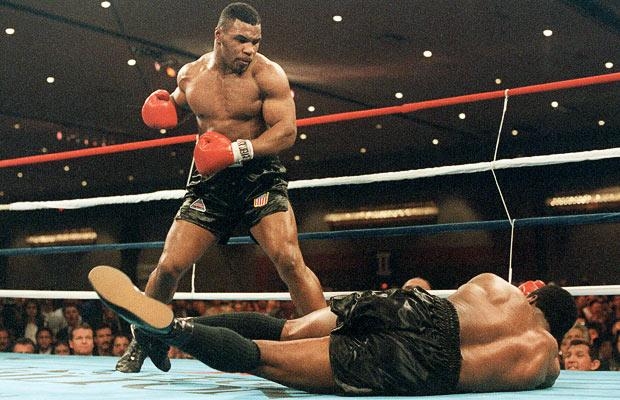

s="mike tyson
Mike Tyson (1966) é um ex-pugilista norte-americano. Em 1986, com 20 anos de idade, ele se tornou o mais jovem campeão mundial dos pesos pesados. Na carreira, foram 58 lutas e 44 nocautes.
Mike Tyson nasceu em Bedford-Stuyvesant, Nova Iorque, Estados Unidos, no dia 30 de junho de 1966. Tinha dois anos quando seu pai abandonou a casa. Com 10 anos, com as dificuldades financeiras, foi morar em Brownsville, um dos bairros mais pobres e violentos de Nova Iorque.
"Tyson era furioso"
Produtos